מערכת ERP לניהול לוח זמנים למרכז חינוכי
Product & Systems Architect — Oleksandr Shevchuk (Cyberdayag)
תקציר: החלפת מערכת מיושנת המבוססת על Excel באפליקציית ווב מודרנית.
פיתוח: פברואר — אמצע אוגוסט 2026.
בפרודקשן: החל מאמצע אוגוסט 2026.
סטטוס: המערכת יציבה בפרודקשן ופועלת ללא תקלות; פיתוח פיצ'רים ומודולים
נוספים נמשך.
הקשר והבעיה
לאחר שהתחלתי לעבוד מול מרכז מדעי לפיזיקה וכימיה, גיליתי שהארגון עובד על מערכת ישנה המבוססת
על Excel. המערכת קרסה כל הזמן, נתקעה תחת עומס, וגרמה לכך ששינויים תפעוליים יומיומיים היו
כואבים ומועדים לטעויות.
היקף הפעילות:
26 בתי ספר שותפים
עד 50 שיעורים ביום
105 קבוצות לימוד
מעבדות ייעודיות
חילופי מורים תכופים, ביטולים ודחיות שיעורים
הזמנות ציוד
הניסיון שלי עם מערכות טרנזקציוניות גיבש עיקרון פשוט: כל שינוי בלוח הזמנים או במשאבים צריך
להיות מטופל באותה רמת קפדנות כמו פעולה בנקאית. לכן תכננתי מערכת המבטיחה שלמות נתונים ברמת
בסיס הנתונים, Audit Log בלתי ניתן לשינוי, ואפשרות לביטול בטוח (rollback) של כל יום.
התפקיד שלי
לאחר לימוד תהליכי העבודה של המרכז, תכננתי באופן עצמאי את ארכיטקטורת המערכת: מודל הנתונים,
האינווריאנטים העסקיים המרכזיים, מודל ההרשאות לפי תפקיד, ומנגנוני פתרון הקונפליקטים. כמו כן
תכננתי את סכמת הפריסה (AWS EC2 + Cloudflare Tunnel) ואת תהליך הגיבוי (AWS S3), שנבדק
במלואו בתרחיש שחזור לאחר קריסה מוחלטת.
עבדתי עם AI כפי שטכ-ליד עובד עם צוות פיתוח: קבעתי משימות, החלטתי על הפתרון לכל אחת מהן,
ובדקתי את הקוד שלב אחר שלב לפני קבלתו למערכת.
סקירת המערכת
27
טבלאות בסכמת בסיס הנתונים
38
פונקציות PL/pgSQL — לוגיקה עסקית בבסיס הנתונים
495
קומיטים לאורך 6 חודשי פיתוח
24/7
בפעילות רציפה בפרודקשן
פלטפורמת ERP מלאה לניהול לוח הזמנים והפעילות התפעולית:
- תבנית שנתית + לוח זמנים שנתי שנוצר אוטומטית
- עריכת לוח זמנים ברמת היום עם freeze / unfreeze / rollback
- חילופי מורים
- ביטולים ודחיות שיעורים
- יצירת שיעורים חדשים ופעילויות נוספות
- תהליך הזמנת ציוד מעבדה
- תור בקשות (עיקרון "חלון אחד")
- הרשאות מדורגות לפי תפקיד
- לוחות תצוגה במסדרונות למורים ולתלמידים
- Audit log בלתי ניתן לשינוי לחלוטין
מחסנית טכנולוגית:
PostgreSQL 16
PL/pgSQL
Node.js + Express
Vue 3 + PrimeVue (RTL)
Docker · AWS · Cloudflare Tunnel
- PostgreSQL — נבחר בזכות תמיכה native ב-EXCLUDE USING GIST. הדבר מאפשר
ברמת מנוע בסיס הנתונים להבטיח היעדר חפיפות בין טווחי זמן, ולמנוע אוטומטית race conditions
בבקשות מקבילות.
- לוגיקה בבסיס הנתונים — העברת האינווריאנטים לבסיס הנתונים יצרה מקור אמת
יחיד ושלמות נתונים ללא תלות בנקודת הכניסה (API, סקריפטים ברקע, או session ישיר של מנהל).
- Node.js + Express — שער API דק וללא state (Thin API Gateway), המוגבל
לאימות ולניתוב בקשות, ללא שכפול לוגיקה עסקית.
- Vue 3 + PrimeVue — קיצר את זמן ההגעה לשוק (time-to-market) הודות
לאקוסיסטם מוכן של רכיבי UI מורכבים למסכי ניהול.
- Cloudflare Tunnel — בידד את התשתית לפי עקרון Zero Trust, וביטל לחלוטין
את הצורך בחשיפת IP ציבורי או פתיחת פורטים נכנסים.
מבנה הפרויקט:
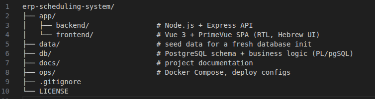
מבנה ה-repository — המערכת תוכננה מהיום הראשון עם הפרדה ברורה בין
האפליקציה, לוגיקת בסיס הנתונים, והתשתית.
המערכת בחיים האמיתיים:
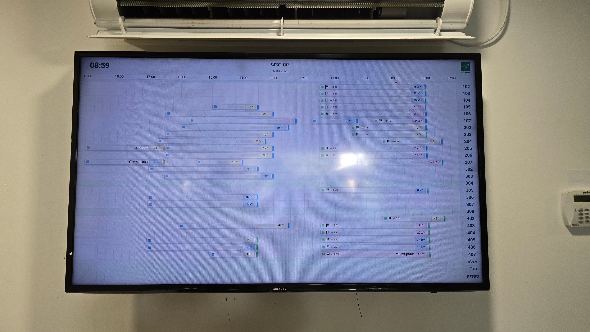
לוח תצוגה בחדר המורים — בשידור חי, על קיר המרכז החינוכי.
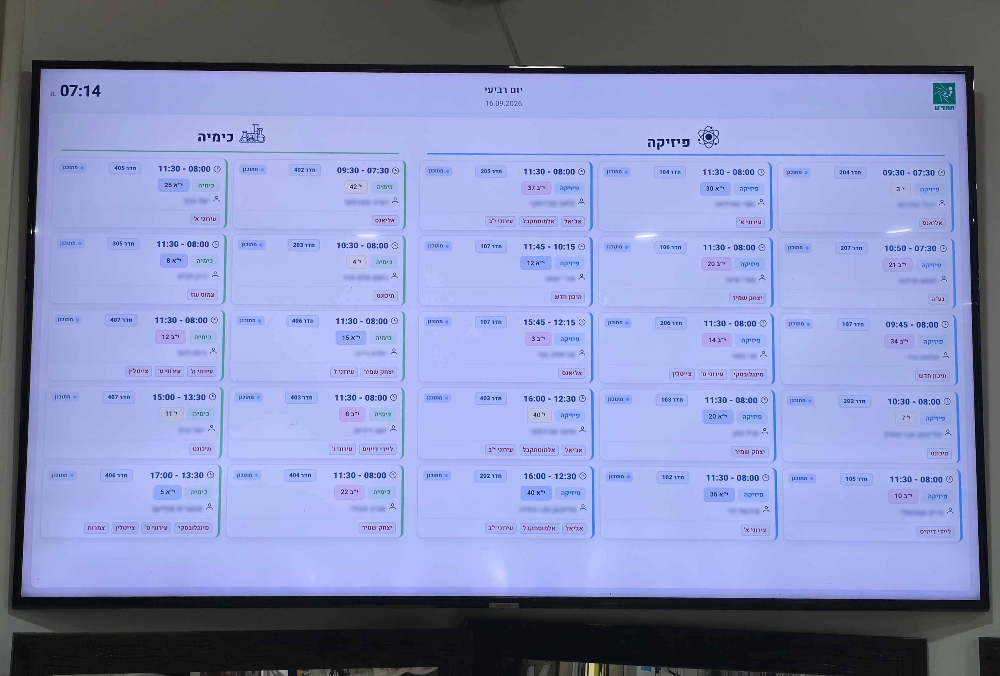
לוח תצוגה לתלמידים — בשידור חי, על קיר המרכז החינוכי.
ממשק המערכת
לחצו על כל צילום מסך כדי לפתוח אותו בגודל מלא.
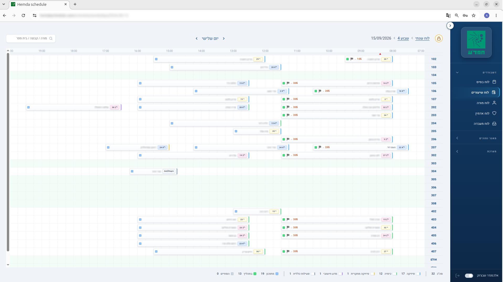
גאנט יומי — לוח הזמנים החי של היום לפי חדרים. קידוד צבעים לפי מקצוע,
הדגשת מחליפים, ומחוון זמן נוכחי.
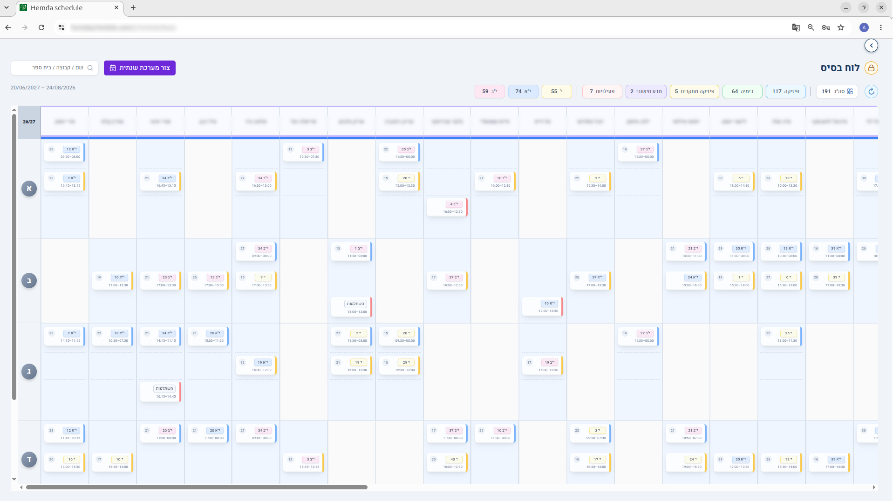
תבנית שנתית (Basic Schedule) — מקור האמת. שינויים ממנה מופצים בבטחה
ללוח הזמנים השנתי שנוצר, בעזרת אלגוריתם דו-שלבי.
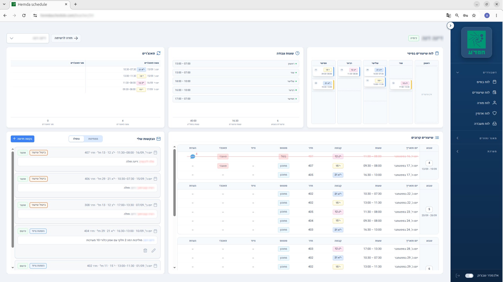
לוח בקרה למורה — סביבת עבודה אישית: שיעורים קרובים, בקשות ציוד, היסטוריית
חילופים, ולוח זמנים אישי.
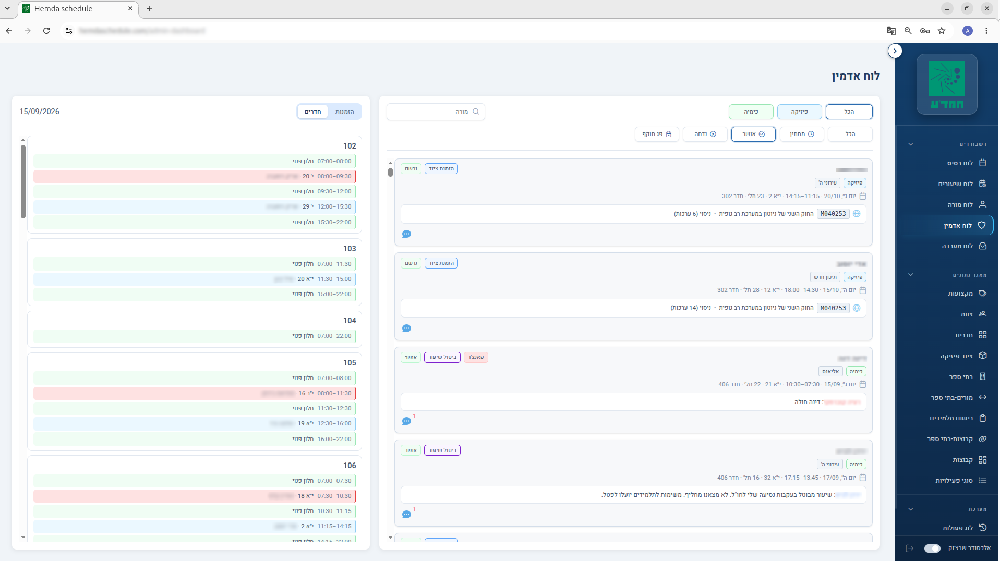
לוח בקרה למנהל — ה"חלון האחד" המרכזי. מורים רק מגישים בקשות; מנהלים
בודקים, מתאימים, ומיישמים את השינויים.
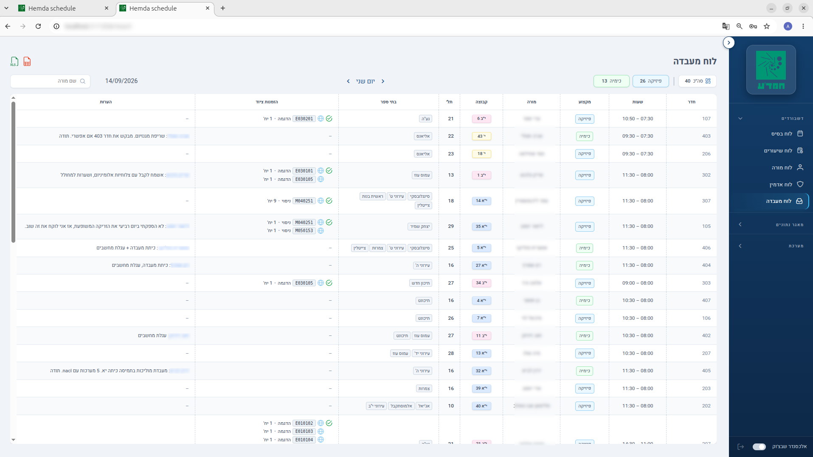
לוח בקרה ללבורנט — תצוגה תפעולית: הזמנות ציוד והערות ליום נבחר.
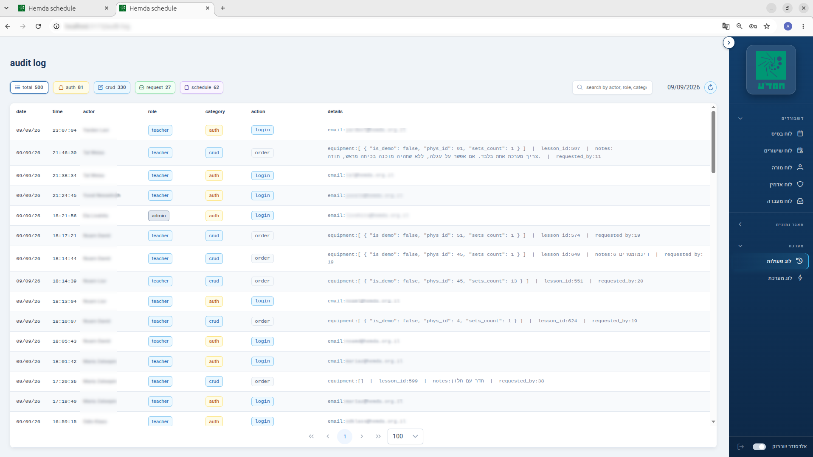
Audit Log — היסטוריה בלתי ניתנת לשינוי לחלוטין של כל פעולה משמעותית.
אפילו סופר-אדמין לא יכול לערוך או למחוק רשומה.
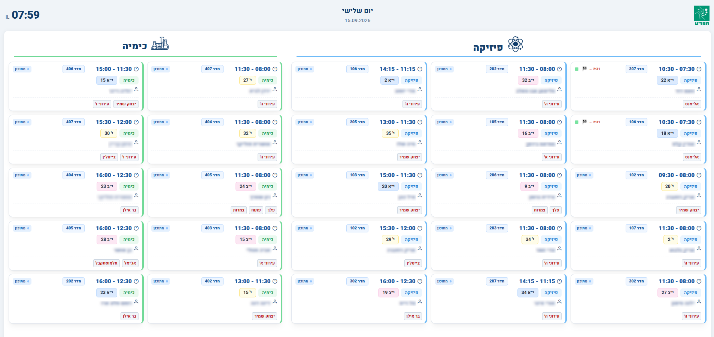
לוח תצוגה לתלמידים — מסך ציבורי המציג את לוח הזמנים החי.
תרבות הנדסית — קוד ותיעוד
אחד העקרונות המרכזיים בפרויקט: לוגיקה והחלטות מוסברות ישירות בקוד — לא רק מה
הפונקציה עושה, אלא גם למה היא קיימת ומה ישבר אם יופר האינווריאנט.
1. הפרדה ברורה בין מבנה ללוגיקה עסקית
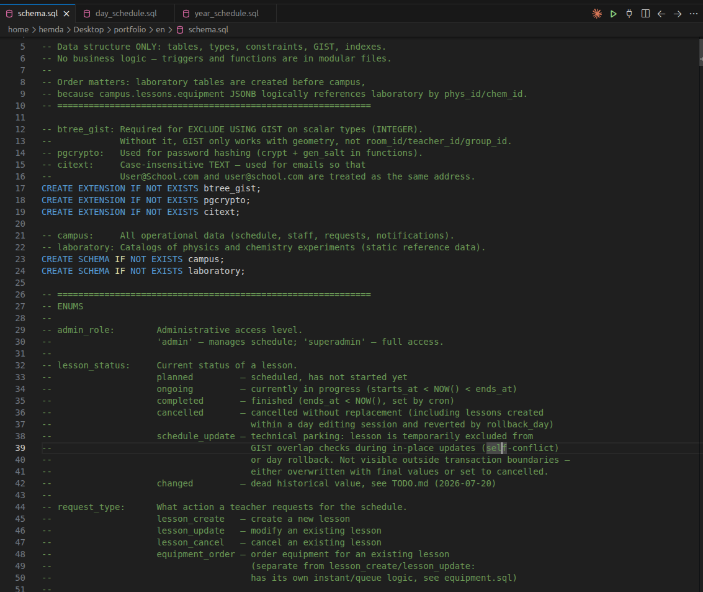
schema.sql — כלל מפורש: הקובץ הזה מכיל רק מבנה. הלוגיקה העסקית חיה
בקבצים המודולריים.
2. בחירת חדר לפי כללים עסקיים מפורשים
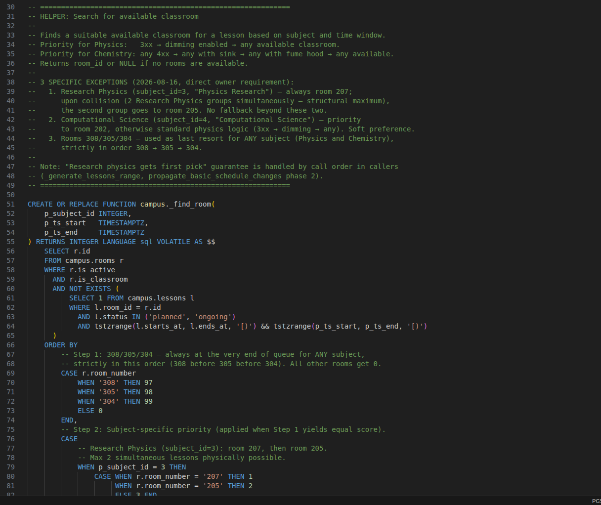
campus._find_room() — כללי עדיפות לחדרים עבור פיזיקה וכימיה מתועדים
ומקודדים ישירות בשאילתה.
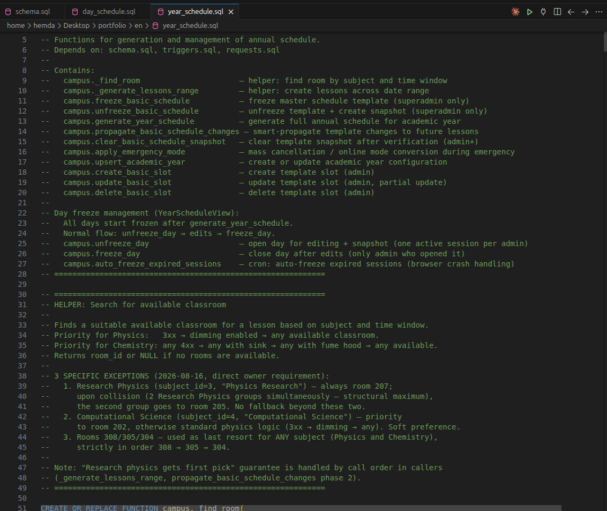
year_schedule.sql — בכותרת הקובץ מוסבר תפקידה של כל פונקציה מרכזית,
וזרימת ה-freeze / unfreeze של יום.
תוצאות
- המערכת פועלת בהצלחה בפרודקשן החל מאוגוסט 2026
- עומדת בעומס התפעולי היומיומי האמיתי של המרכז
- אינווריאנטים קריטיים (קונפליקטים בלוח הזמנים, הרשאות גישה, audit) נאכפים ברמת בסיס
הנתונים
- היסטוריה מלאה ובלתי ניתנת לשינוי של כל פעולה משמעותית
- כ-50 עובדים משתמשים במערכת מדי יום